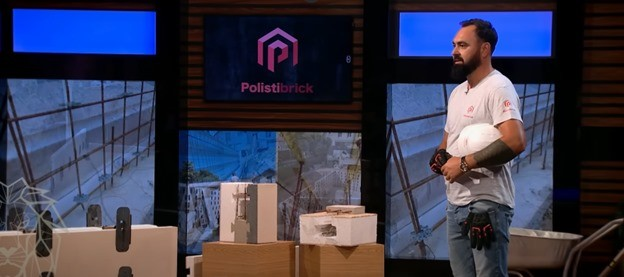
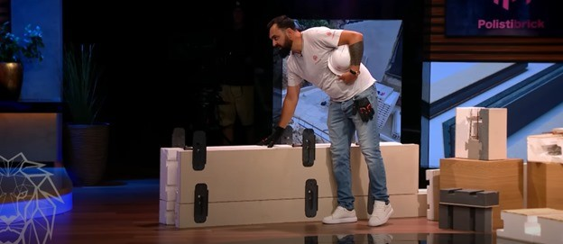

Nous sommes honorés d’annoncer le succès du fondateur de Polistibrick, Lucian Bouleanu, qui a obtenu un investissement stratégique de 500 000 € de la part de quatre investisseurs dans l’émission « Qui Veut Être Mon Associé ? ». Cette validation solide confirme le potentiel exceptionnel du système Polistibrick – une solution de construction modulaire innovante, fiable et durable.
🔧 Qu’est-ce que Polistibrick ?
Polistibrick est un système de construction modulaire breveté, conçu spécialement pour la réalisation de maisons passives. Le système intègre quatre étapes essentielles de l’exécution dans un seul processus, réduisant drastiquement le temps de construction et éliminant les erreurs de montage.
Construit sur une base en béton armé, avec une isolation extérieure intégrée et des murs intérieurs en fibrociment, ce système assure :
🔹 Fiabilité structurelle – grâce à un design robuste et à la connexion directe entre les murs et la fondation
🔹 Sécurité d’exécution – les processus standardisés éliminent les improvisations sur chantier
🔹 Efficacité énergétique supérieure – idéal pour les maisons passives, sans besoin de chauffage ni de climatisation dans des conditions normales
🔹 Montage rapide – réduction significative de la durée d’exécution par rapport aux méthodes traditionnelles
🔹 Adaptabilité et évolutivité – parfait pour des projets résidentiels, industriels ou commerciaux
🌍 Pourquoi est-ce important ?
Dans un contexte où la durabilité et l’efficacité énergétique ne sont plus optionnelles mais essentielles, Polistibrick propose une vision claire et applicable pour une construction responsable de l’avenir. Le système proposé par Lucian Bouleanu n’est pas seulement une innovation technique – c’est un changement de paradigme dans notre façon de penser, de concevoir et de construire les habitations modernes.
L’investissement obtenu est une confirmation de la qualité, viabilité et potentiel international de la technologie développée par Polistibrick.
🔗 Restez avec nous pour suivre le lancement des premiers projets réalisés avec ce système et découvrez comment, ensemble, nous construisons les habitations intelligentes du futur.
